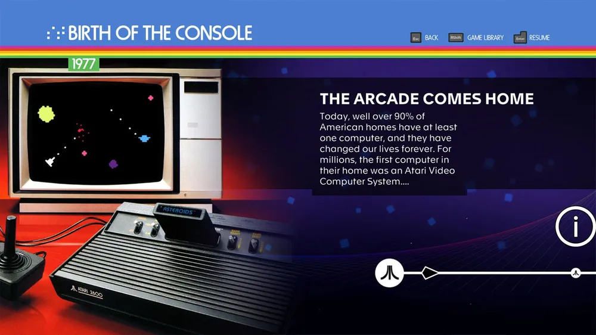

Atari 50: coleção comemorativa de 50 anos terá clássicos e jogos inéditos
Atari 50: The Anniversary Celebration será uma coletânea comemorativa dos 50 anos da empresa Atari, pioneira no mundo dos games. A coleção trará mais de 90 jogos clássicos de seis plataformas, desde os antigos Atari 2600, 5200, 7800 e ST até o portátil Atari Lynx e o console de 64 Bits Atari Jaguar, jogáveis pela primeira vez em consoles modernos. Além dos clássicos, haverá ainda seis títulos inéditos inspirados pelos games do passado. Atari 50: The Anniversary Celebration será lançado em novembro de 2022 para PlayStation 5 (PS5), Xbox Series X/S, PlayStation 4 (PS4), Xbox One, Nintendo Switch, Atari VCS e PC, pelas lojas digitais Steam e Epic Games Store.
A lista de jogos clássicos da Atari inclui alguns nomes como: Adventure, Asteroids, Atari Karts, Baseball, Combat, Centipede, Cybermorph, Haunted House, Missile Command, Pong, Star Raiders, Super Breakout, Tempest, Vollyeball, Yars' Revenge e muitos outros mais. Será possível escolher várias formas de listar os games e haverá uma série de filtros, bordas e outras opções de tela para suavizar os visuais antigos. Jogadores também poderão configurar os controles como desejarem e ler uma versão digital do manual de instruções dos títulos.
Além dos games, a coletânea trará também várias informações sobre a história do que estava acontecendo na Atari na época e a motivação que levou à criação dos jogos. Estará disponível um grande acervo de rascunhos, diagramas de hardware, memorandos internos, fotografias, vídeos e até anúncios veiculados em revistas. Usuários encontrarão também novas entrevistas com desenvolvedores icônicos, como o criador de Pong, Al Alcorn, e o criador de Yar's Revenge, Howard Scott Warshaw.
Fonte: TechTudo